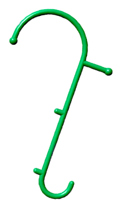

Избавьтесь от боли за 7 минут.
Самостоятельно. Без врачей и лекарств.

Самостоятельно. Без врачей и лекарств.
Принято считать, что основной причиной болей в спине, мышцах и суставах являются дегенеративно- дистрофические изменения - остеохондроз и артроз. В последние десятилетия появился ещё один диагноз - грыжа межпозвонковых дисков.
Для того, чтобы мы чувствовали боль, в ткани должны находиться специальные рецепторы, которые эту боль воспринимают — ноцицепторы.
Исследования последних лет показали, что подавляющее большинство болевых рецепторов находятся в фасции. Фасция пронизывает насквозь всё наше тело. И именно в ней находятся большинство болевых рецепторов.
Боль появляется при раздражении ноцицепторов, находящихся в фасции. Такое возможно при многих процессах. Но на практике наиболее часто встречается раздражение фасции при различных "неполадках" в работе мышц.
Одним из раздражений являются триггерные точки, которые вызывают большую часть всех болей во всех структурах опорно-двигательного аппарата.

Остеохондроз

Грыжа межпозвоночных дисков

Артроз